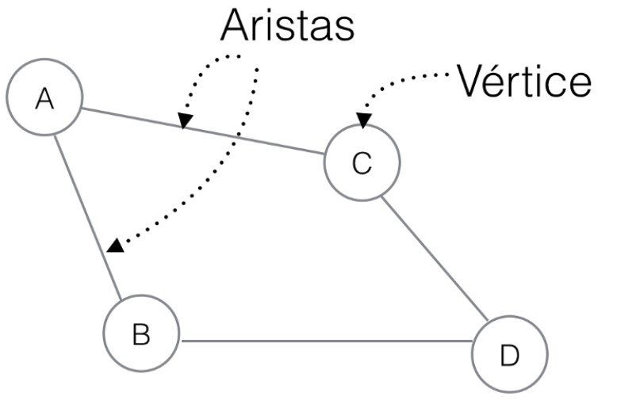
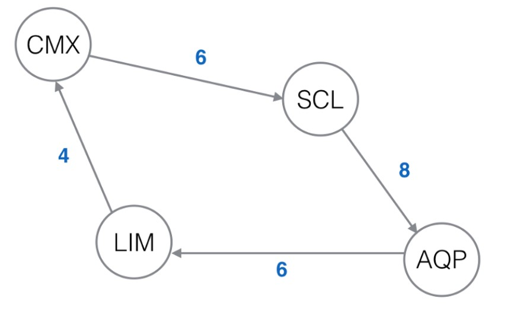
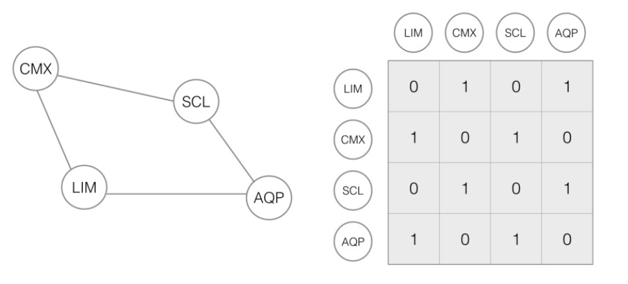
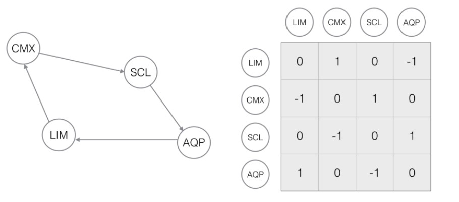
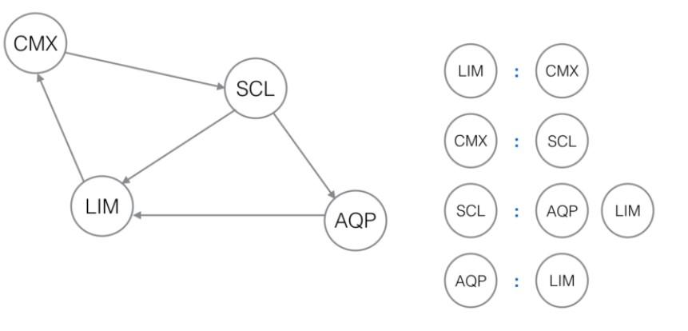

-
¿Qué es un grafo?
Un grafo es un conjunto, no vacío, de objetos llamados vértices (o nodos) y una selección de pares de vértices, llamados aristas (edges en inglés) que pueden ser orientados o no - 
-
Grafos

Aprenderas como hacer Grafos en JavaScript :)
¿Qué es un grafo?
Un path o trayectoria es una secuencia de vértices de manera que están conectados por sus aristas. Por ejemplo, en el grafo anterior tenemos un path que se define como [LIM, CMX, SCL, AQP]. Esta trayectoria está usando 3 aristas para conectar los vértices. A la cantidad de aristas que usa un path le llamamos el largo o length del path. Podemos tener un path de un vértice hacia si mismo, a eso le llamamos loop, y tienen un length de 0.
Decimos que se ha formado un ciclo cuando un vértice se repite. Si sólo se tratara del último y el primer vértice hablamos de un ciclo simple, ya que son el mismo. Si se repiten más vértices menos el primero y el último hablamos de un ciclo general.
En el grafo superior podemos observar un grafo direccionado o dígrafo que tiene un ciclo simple.
Un grafo ponderado es aquél en que cada arista te da información de la conexión entre uno y otro vértice. Por ejemplo, imaginemos que cada sede (nodo en nuestro grafo) va un número de semanas por delante de la anterior, esto se puede representar como pesos en semanas en el grafo.
Además de la forma gráfica tenemos otras formas de reprensentar los grafos. Una de estas formas es la matriz adyacente.
Por ejemplo, asumiendo nuestro primer grafo no dirigido, tendríamos su matriz adyacente como sigue:
Notarás que no nos da mayor información que la existencia de conexiones entre vértices. Por ejemplo el vértice LIM esta unido a CMX y AQP, que lo puedes ver refleajado en la matriz de la derecha con 1 en dichas intersecciones.
El en caso de un grafo dirigido, la representación varía indicándonos el sentido de la conexión a través de signos positivo y negativo. Negativo indica que la conexión ingresa al vértice, mientras que positivo es que sale del vértice. Por ejemplo en el siguiente grafo tendrás:
Tal como la matriz adyacente, la lista adyacente es otra forma de representar los grafos. Esta puede parecer mucho más sencilla. Pero va a depender del caso.
Una lista adyacente esta representada por una lista en la que los índices son los vértices y está conectado a un arreglo con los otros vértices. Cambié el grafo un poco para que puedan verlo mejor.
